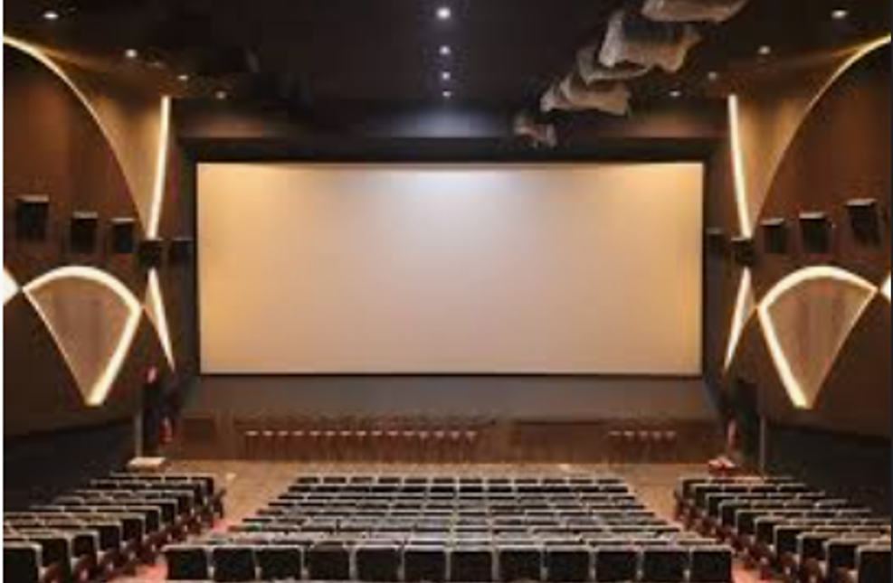

PERAMBALUR CITY(25017123)
RAM CINEMA THEATRE
Ram Theatre is a popular cinema theatre located in many
towns across Tamil Nadu.It is well known for screening
the latest Tamil, Telugu, Hindi, and sometimes English
movies.For many people in the local area, Ram Theatre
is not just a place to watch films but also a spot for
social gathering and entertainment.Ram Theatre is one of
the oldest and most recognized theatres in its area.
It gives people an affordable way to enjoy movies with
family and friends.During festival releases (like Pongal
or Diwali), the theatre atmosphere is very energetic,
with cut-outs, posters, and celebrations by fans.
It also supports the local economy by providing
jobs and business opportunities around the theatre
(food stalls, auto drivers, small shops).
